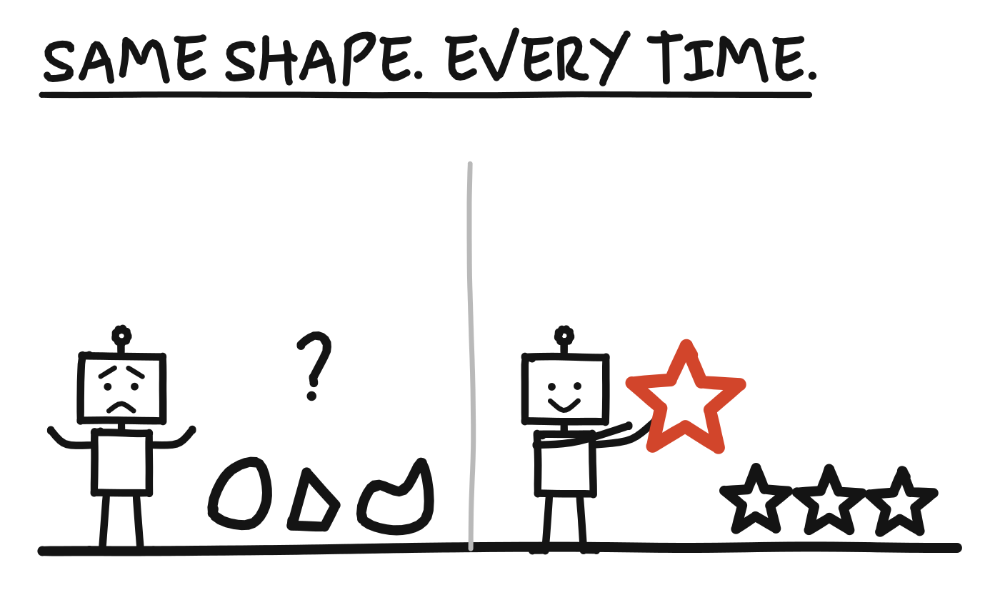

← Every Skill I Work With
The Skills That Do The Work
I have over a hundred skills in my Claude account. These 20 do most of the work: they run every day on their own, catch me in the moment, carry the copy I write, or help me think and learn. Every other skill is one click away.
An earlier version, kept for the record: the 80/20 cut from the morning of November 16, 2026, replaced the same morning by every skill on one page, grouped by function. Picked by what actually runs: the daily schedule, what fires on its own, and what we've used and sharpened the most. Grouped, with the group I lean on most first. Claude doesn't keep a count of how often each skill is called, so this is the best read of the evidence, not a tally. A skill is a written set of instructions Claude loads when the work calls for it, so a job gets done the same way every time.

1. Every Day, On Their Own
These run on a schedule, or as part of my morning page. I don't call them. I just see what they made.
- whats-happening: My one daily page, built every morning at 7:45. Everything on my mind at a glance, so I pick today's work myself. It pulls in my to-dos, my mail and my open sessions through the next three.
- daily-todo-review: Keeps my To-Dos doc. I check off, drop or keep, and anything I say mid-work ("remind me," "we should") gets caught in one line.
- inbox-check: Sweeps my Gmail, tells me what needs me, and picks junk to unsubscribe from.
- session-board: One line for every open session: what it's doing, its status, its link. So I can finish one or close it.
- check-my-bee: Every night, reads my Bee wrist recorder (business only) and pulls the ideas and to-dos into my Bee Digest.
- drive-tidy: Every four hours, names, tags and files my Google Drive, a few hundred files at a time.
- evolution-log: Every night, writes down any change in how I work with Claude, in my own words, in the Breakthrough Log (the record behind these pages).
- skills-sweep: Every night, copies my installed skills into my private repo, so nothing is ever lost.
2. In The Moment, Without Being Asked
Claude catches the pattern and runs these. I never have to remember them.
- make-it-simple: When an answer runs long or decisions pile up: done or not done, then the 1, 2, 3 I have to do. (The story)
- get-on-the-same-page: When I'm hunting for things or too much is going on: it stops, says where we are, and parks the new thing.
- hidden-assumptions: Before a test spends money or a finding becomes a rule, it finds the belief hiding underneath and checks it. Rich Schefren's Hidden Obstacles, pointed at my own work.
- example-bank: Every time I pick one version over another, it saves the before and after, so Claude learns my taste from real picks.
3. When I Write Copy
- marketing-council: The brainstorm room. A council of marketers (Ray Edwards first, then Kennedy, Brunson, Halbert and the rest) pushes the angle, the offer and the headline before a word is written.
- chain-of-beliefs: What a stranger has to believe, and in what order, to buy. Squeezed toward three. (Why it changed)
- conversion-sim: Runs the copy past a simulated room of buyers before I spend a dollar on the real one.
- story-lesson: Stories, lessons and parables in my voice, where every beat has a job and the lesson lands.
4. Thinking, Drawing And Learning
- wait-but-why: Explains one big idea the way Tim Urban does: start where the reader is, build it a piece at a time, draw it. (The first one)
- napkin-sketch: Finds the picture that makes an idea land, rough first, then clean. (How it learned)
- explainer-video: A narrated explainer any time I want to learn something, played at 1.5x and filed in my library.
5. Keeping The Skills Sharp
- skill-triggers: Every new or changed skill gets the words that call it and the pattern that fires it. I get a three-line read instead of the whole file.
Everything Else
The other 85Every Skill I Work WithAll 105, grouped by the job each one does, with what I say to call it.
Earlier version: November 13, 2026.